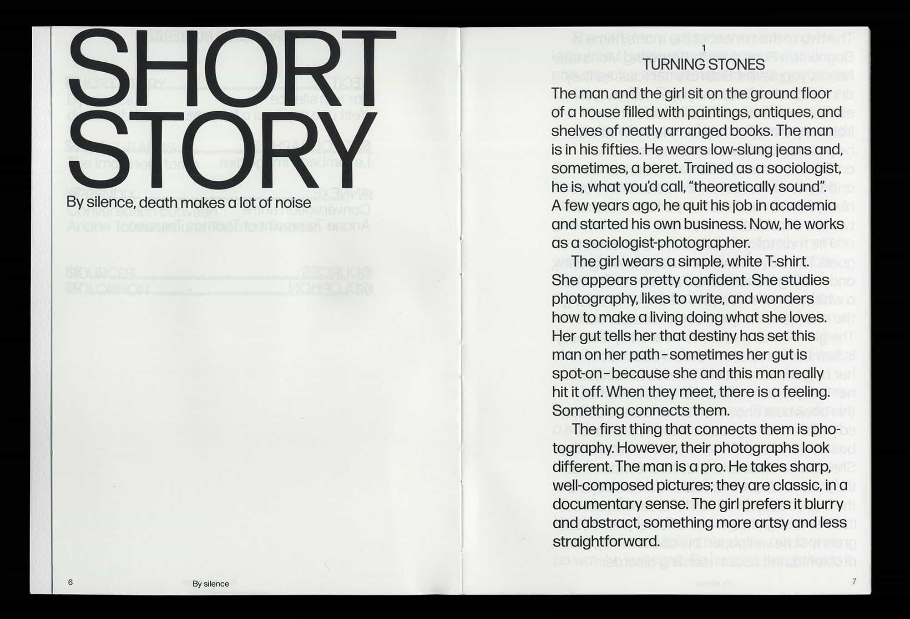
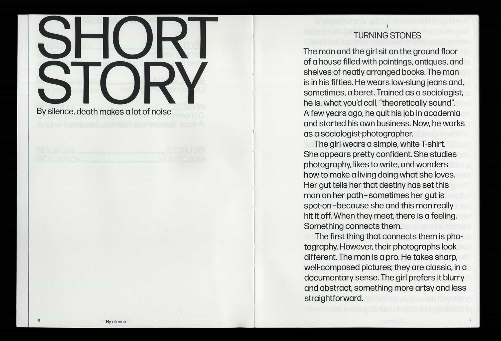


 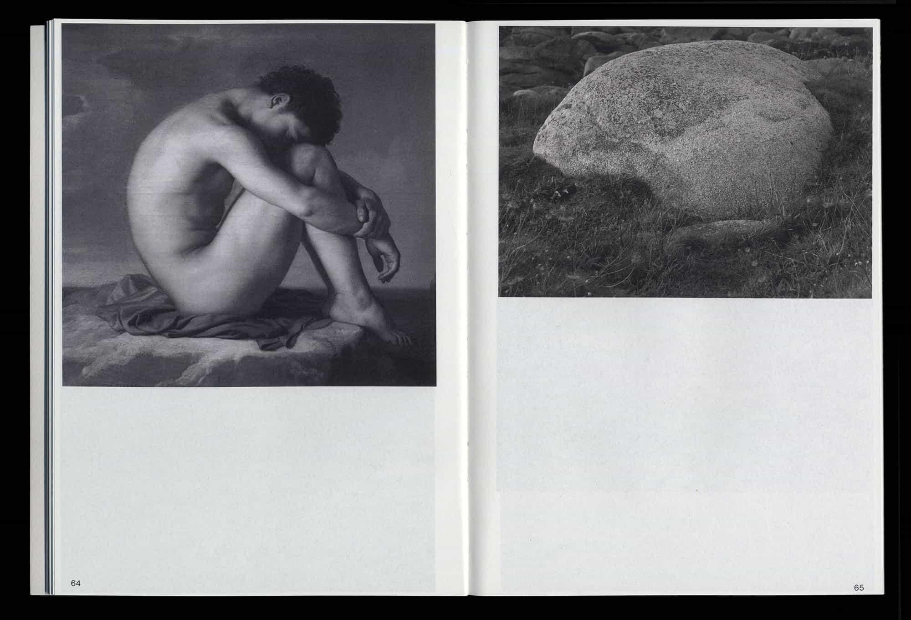
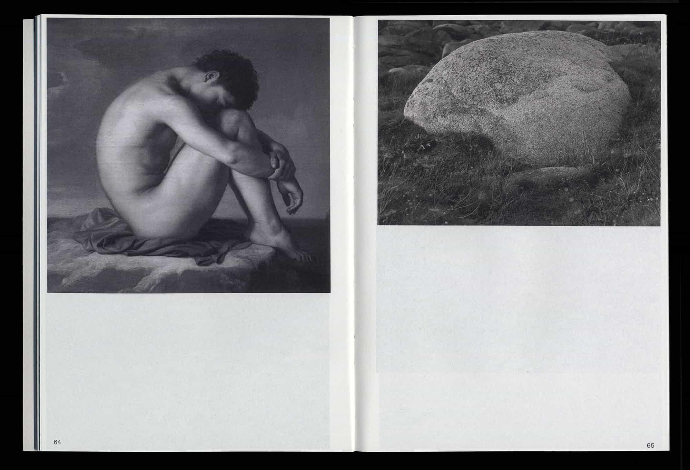
 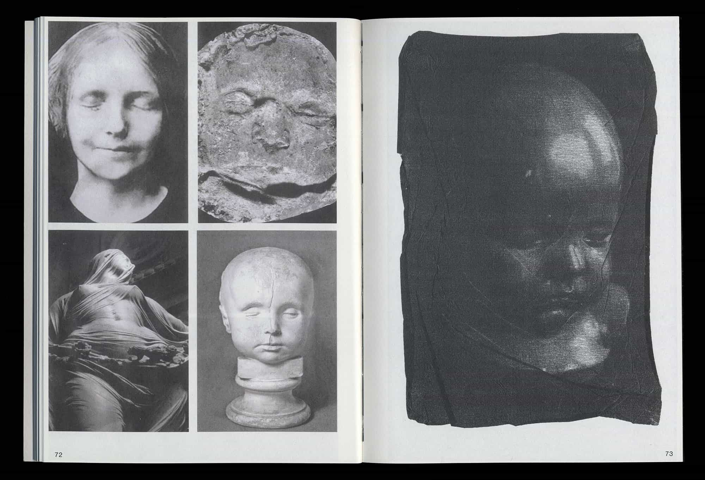
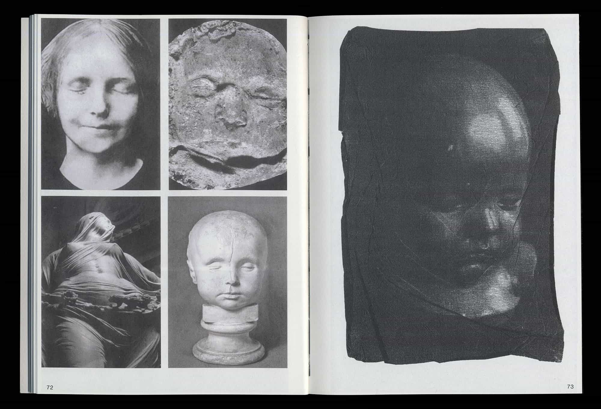


Realms of Reality
Reality. Why should we question it? Because it is not just about our self-centered existence in the Universe. The discussion involves a lot more that we tend to overlook. This discourse has been lead by philosophers and theoretitians for centuries. I will be looking at Carl Jung and Jean Baudrillard specifically, with other examples as I go.
Carl Jung (1875) was a Swiss psychoanalyst who was inspired by Freud founding principles of psychoanalysis. Jean Baudrillard (1929) is a French philosopher, inspired by Marshal McLuhan’s alaysis of current technological communications.
Jung writes from a psychoanalytical standpoint on the underrepresented role of images and symbols in an individual’s perspective, with examples from his own practice. Jean Beaudrillard on the other hand is very speculative and critical on how media and reproduction methods are affecting our perception of what is real within the theory of hyperreality. Baudrillard proposed this different term and definition for our reality, suggesting that nothing is “real” anymore after being copied over and over again.
I want to look at the different ways in which reality and the Real has been talked about, from ancient to contemporary philosophers and current media. Also, the connection between the theory of the simulacra, dreams and analysing how we perceive those things. What are sources other than dreams that we can draw conclusions about our experiences of reality?
In studying the myths and religions of cultures past and present Jung noticed that many of them shared similar patterns, themes and symbols. He proposed that the human mind or psyche is not exclusively the product of personal experience, but rather contains elements which are pre-personal or trans-personal and common to all. These elements he called the ‘Archetypes’, and he proposed that it is their influence on human thought and behavior that gives rise to the similarities between the various myths and religions. To properly understand the role of the archetypes we must first explain Jung’s conception of the psyche. Jung described the psyche as one’s total personality, encompassing all one’s thoughts, behaviors, feelings and emotions. Jung divided the psyche into three major realms – consciousness, the personal unconscious, and the Collective Unconscious. These three realms are not closed off from one another, but constantly interact in a compensatory manner.
Baudrillard’s theories are concerned with the symbolic world around us, which is similar in the way that Jung sees the symbolic dream realm. Humans have grown apart from these signs and fail to recognize them. The symbols of events happening around us make them loose all meaning, and thus become “hyperreal”, nothing is real anymore in Baudrillard’s words. 1 It can be said that they both believe in the oversaturation of signs and symbols around us that create a cloud.
The connection between these two theories comes down to the belief that dreams and the hyperreal are no different. The “dream argument” claims that the way we perceive our dreaming state experiences should be judged just as much as wakefulness, not as pure illusion.
Jung’s whole practice was based around the symbols within dreams that are actually derived by symbolic concepts that surround us (archetypes). He wrote about this thouroughly in Man and his symbols, “As a general rule, the unconscious aspect of any event is revealed to us in dreams, where it appears not as a rational thought but as a symbolic image.” 2 What we are not trained or used to doing is recognizing and interpreting these symbols, that come from our “non-dream” life. So we treat them as a secondary, nonsensical interpretation of what we experience in our life.
The discourse concerning reality perception stems from ancient thinkers such as Greek philosopher Plato and the Chinese philosopher Zhuangzi. Plato’s allegory to the cave is a long discussed theory where prisoners are chained up in a cave facing a wall where various objects have their shadows cast upon from a burning fire. The prisoner’s reality is constructed from the shadows that they stare at day after day. This is in a way how we look at our own direct surroundings. What we see and hear is how it. Not questioning alternative realities or where these images are streamed from. This idea relates to Baudrillard’s writtings on hyperreality. Everything is reproduced to the point where they become the true reality to our perception. This is basically what philosophers aim to avoid— getting trapped in this “cave” of imposed realities— and looking at the world from a wider perspective that others still stuck in the “cave” will not necesarily believe. 3
Zhuangzi wrote in On the Equality of Things, “He who dreams of drinking wine may weep when morning comes; he who dreams of weeping may in the morning go off to hunt. While he is dreaming he does not know it is a dream, and in his dream he may even try to interpret a dream. Only after he wakes does he know it was a dream. And someday there will be a great awakening when we know that this is all a great dream. Yet the stupid believe they are awake, busily and brightly assuming they understand things, calling this man ruler, and that one herdsman--how dense!”4 This is quite the statement, calling out people who (commoners) who believe in the separation of dream and wakeful reality. In our current socioeconomic conditions we are not given the time and space to reflect on our experiences within and beyond dreams. Our routine lives have us captured in Plato’s cave.
We, humans are not equipped to mentally separate virtual events from real ones. For instance, a report of a stabbing that you read on your Facebook feed is perceived by the mind in a totally new way. We are confused by the environment that we live in, but are not questioned by it on a daily basis, because everything happens at a fast, seamless pace.
Films are a much talked about topic within communication and media theory. As new digital imaging technologies arise, what is presented to viewers becomes more distant from the real. The green screen has become yet another even less real hyperreality. A great example of this phenomenon is the film 300. Characters– enchanced, environment–simulated to the fullest. We have reached a time where it is expected that a big budget film uses as many visual effects to immerse us into its narrative and imagery. It is unbelievable to what extent movie producers go to create these hyperreal scenes. The green screen has turned into a symbol for a reality that is yet to be altered by a post-production crew. Some films are so powerful in their production that I am left feeling attached to the characters, their experiences and their environment. But what it is in fact, is a simulacra of a feeling and experience, a hyperreality taking place in the limits of a screen.
“We used to live in the imaginary world of the mirror, of the divided self and of the stage, of otherness and alienation. Today we live in the imaginary world of the screen, of the interface and the reduplication of contiguity and networks. All our machines are screens. We too have become screens, and the interactivity of men has become the interactivity of screens,” 5 writes Jean Baudrillard in Xerox and Infinity. The development has been observed in the past century and now we are almost completely engulfed by our screens, which are the main tool for reproducing simulacrum.
What about our own tendencies to want to control a certain real world? Most teenagers growing up with a computer must have been playing life simulator The Sims. The way that this game is a simulacra of our reality is that we play the game as if the players are real human-beings even though they are clearly digitally generated. The way we play the game reflects something of our personality though. Whether you choose to create a perfect family or to kill your pets. Unlike a dream state, we do start up the game consciously and make all the choices based on our liking, those preferences to stem from something in our personality and reality. It is like a vivid dream within the awakened state.
The main recognizable dilema is that as participants in our current society, we are incapable of grasping what is beyond our awaken or “real” lives. It all comes down to how much we value our proper world, without questioning the way symbols and imagery are represented. Jung wanted to help people to recognize things in their dreams as simulacrums of past events that might also just be abstract concepts within our society. We must become aware of all simulacrum surrounding us, but they are so abdundant that we end up becoming blind to them.


 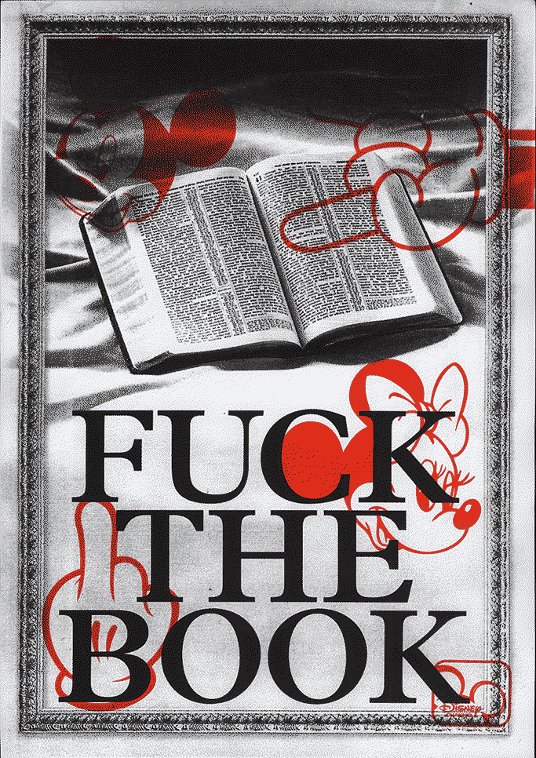
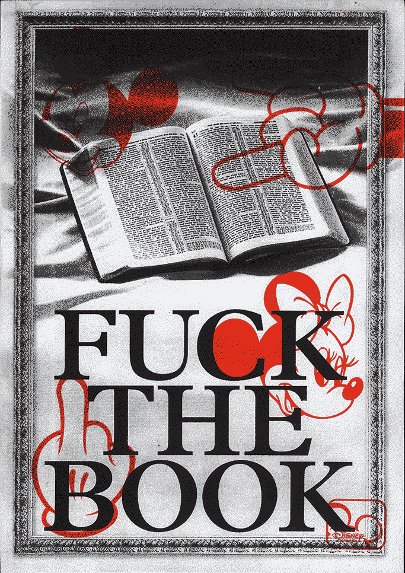


 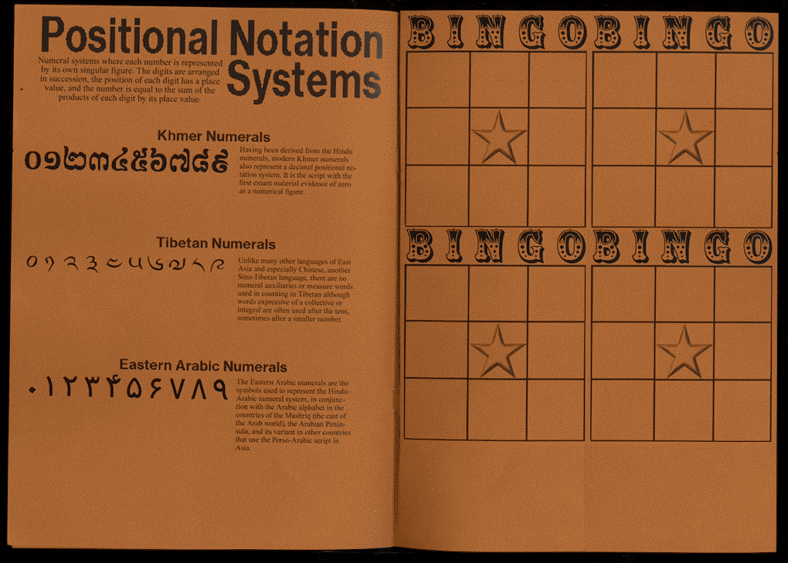
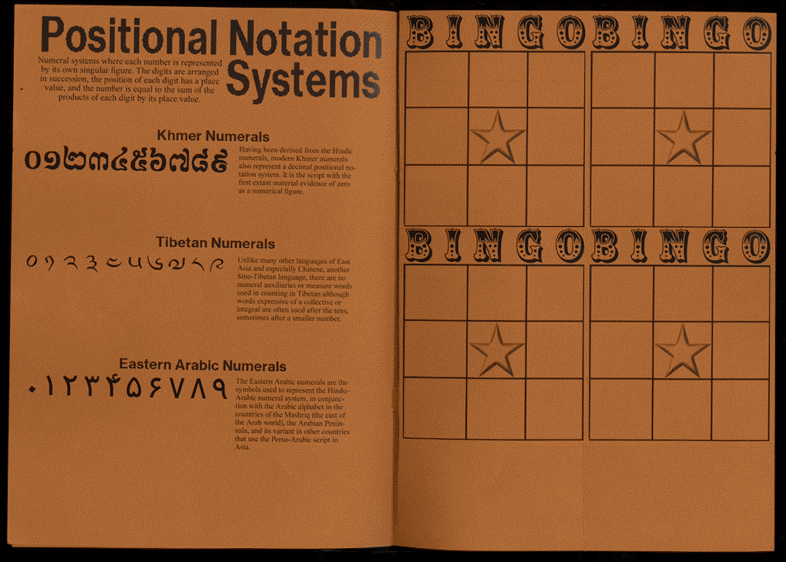


Zahari Dimitrov
b. Sofia, 1998
BA Graphic Design from KABK
Based in The Hague, NL
Looking for commisions
Send me an email ...
Irmgard Emmelhainz
Shattering And Healing
So perhaps instead of self-liquefying (further), we need to come to terms with our own brokenness and vulnerability.
Through a sort of cathartic separation from the damaged part, we can cleanse ourselves and then commune with the remains.
But what does vulnerability actually mean? Is it being able to acknowledge a state of pain or insecurity, embracing the feeling of coming undone? I feel that it’s something I’ve tried to hide from others and from myself. At the cost of headaches, a bloated stomach, the inability to articulate a sentence. A mental-physical feeling of paralysis. I now suspect that people spend a lot of time and effort hiding in this way. Could I overcome my terror of falling apart if I allowed myself to rely on others, on you? Or should I be a “cruel optimist” and create hopeful and positive attachments, in full awareness that they will not work out? Every option seems too difficult, because the tiniest and seemingly most harmless threat of exposure that I perceive pulls me down into a spiral of terror. Or used to. Now I can handle these things much better, and you know it.

I’ve come to understand your passion for diving as a hunger for intimacy. As you linger, fish suddenly stop seeing you as an intruder and welcome you into their world. It helps you fill your own void.
So I have established that vulnerability is not a wound but the scar of individualism. One problem is that in our contemporary world, being seen and being exposed overlaps with the current practice of self-marketing. But I’m talking about self-exposure of the heart (not Lena Dunham’s narcissistic self-exposure, and not terrorist self-exposure). Vulnerability as an acknowledgment of the desire for intimacy.
Zahari Dimitrov
b. Sofia, 1998
Currently studying Graphic Design
KABK, The Hague, NL
Send me an email...


 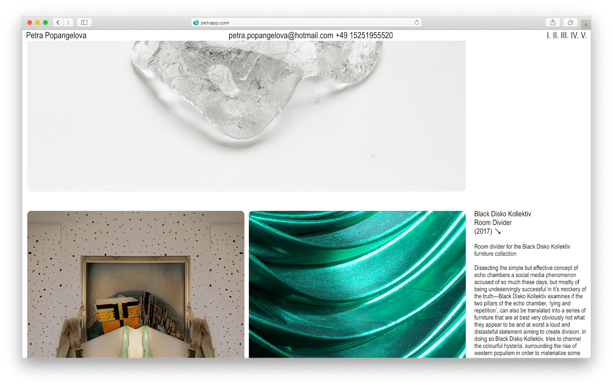
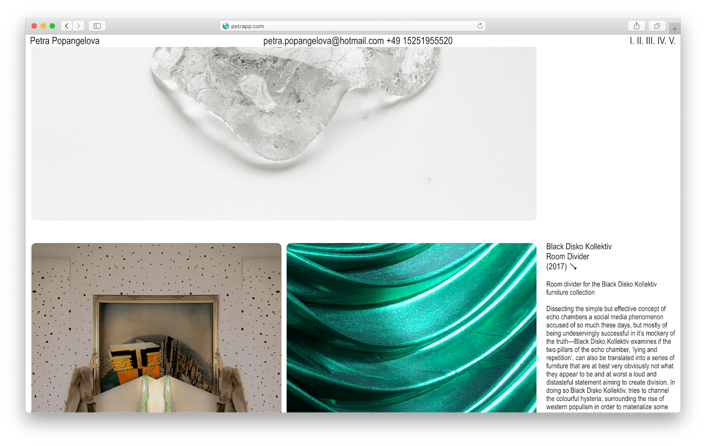